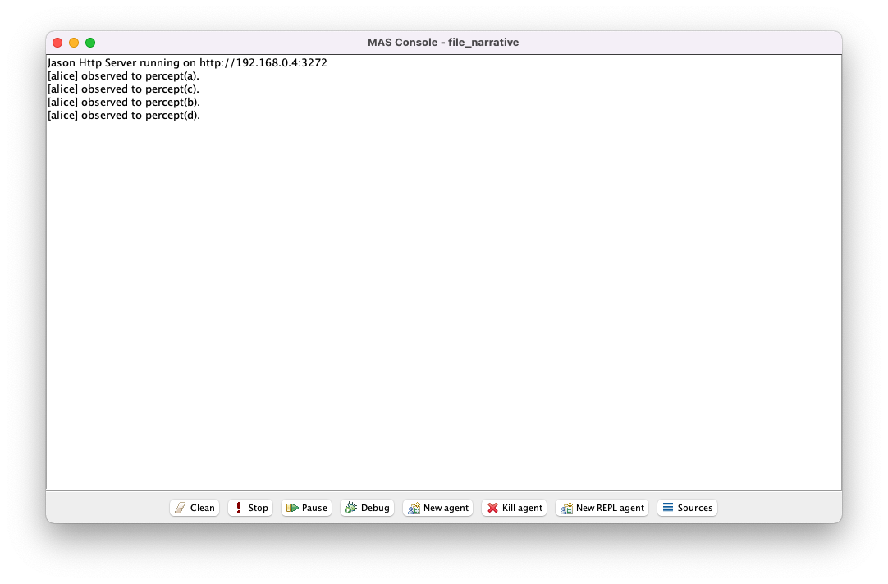

file_narrativefile_narrative.mas2jsrc/asl/simulator_agent.asl and src/asl/alice_agent.aslnarrative.tsvsrc/java/file_narrative/MyEnvironment.java to implement a Jason environmentIn this section we will see how to read input from a text file as well as one possible method to simulate the occurrence of percepts in the environment.
file_narrativefile_narrative.mas2j# file_narrative.mas2j
MAS file_narrative {
infrastructure: Centralised
environment: file_narrative.MyEnvironment
agents:
simulator simulator_agent;
alice alice_agent;
aslSourcePath:
"src/asl";
}
src/asl/simulator_agent.asl and src/asl/alice_agent.asl# src/asl/simulator_agent.asl
/* Initial beliefs and rules */
timestep(1).
/* Initial goals */
!update.
/* Plans */
+!update : timestep(X) <- simulate(X); -+timestep(X+1); !update.
Notice that simulator simply maintains a belief about the current timestep in the form timestep(X), and executes an environment action simulate(X) each time that belief is updated.
# src/asl/alice_agent.asl
/* Initial beliefs and rules */
/* Initial goals */
/* Plans */
+percept(X) : true <- .print("observed to ", percept(X), ".").
Notice that alice simply acknowledges the occurrence of a new percept.
narrative.tsv# narrative.tsv
2000 percept(a)
11000 percept(b)
11000 percept(c)
33000 percept(d)
The file narrative.tsv is in tab-separated (TSV) format and should be located in the same directory as file_narrative.mas2j.
Each line is comprised of a positive integer in the left column and a string in the right column, where the integer represents a timestep and the string represents a percept (in Jason syntax).
src/java/file_narrative/MyEnvironment.java to implement a Jason environment# src/java/file_narrative/MyEnvironment.java
package file_narrative;
import java.io.BufferedReader;
import java.io.FileReader;
import java.io.IOException;
import java.util.ArrayList;
import java.util.HashMap;
import java.util.List;
import java.util.Map;
import jason.asSyntax.ASSyntax;
import jason.asSyntax.Literal;
import jason.asSyntax.Structure;
import jason.asSyntax.parser.ParseException;
import jason.asSyntax.parser.TokenMgrError;
import jason.environment.Environment;
public class MyEnvironment extends Environment {
Map<Integer, List<Literal>> narrative;
@Override
public void init(String[] args) {
narrative = new HashMap<Integer, List<Literal>>();
try {
BufferedReader tsvReader = new BufferedReader(new FileReader("narrative.tsv"));
String row = null;
while((row = tsvReader.readLine()) != null) {
String[] cells = row.split("\t");
Integer timestep = Integer.parseInt(cells[0]);
List<Literal> percepts = narrative.getOrDefault(timestep, new ArrayList<Literal>());
try {
percepts.add(ASSyntax.parseLiteral(cells[1]));
} catch (ParseException e) {
e.printStackTrace();
} catch (TokenMgrError e) {
e.printStackTrace();
}
narrative.put(timestep, percepts);
}
tsvReader.close();
} catch (NumberFormatException e) {
e.printStackTrace();;
} catch (IOException e) {
e.printStackTrace();
}
}
@Override
public boolean executeAction(String agName, Structure act) {
if(agName.equals("simulator") && act.getFunctor().equals("simulate") && act.getArity() == 1) {
Integer timestep = Integer.parseInt(act.getTerm(0).toString());
if(narrative.containsKey(timestep)) {
this.clearPercepts(); // you may or may not wish to perform this step
for(Literal percept : narrative.get(timestep)) {
this.addPercept(percept);
}
}
}
return true;
}
}
The init method reads the text file narrative.tsv as input to construct a class variable narrative that is a mapping from timesteps to lists of percepts.
The executeAction method then implements the behaviour of the simulate(X) environment action used by simulator, adding to the environment the list of percepts for timestep X as specified by the class variable narrative.

The message observed percept(a) will be printed initially.
After a short period the messages observed percept(b) and observed percept(c) will be printed.
Finally, after another short period, the message observed percept(d) will be printed.
This short delay between messages indicates that percepts from narrative.tsv are only generated in the environment when simulator believes the corresponding timestep has been reached.